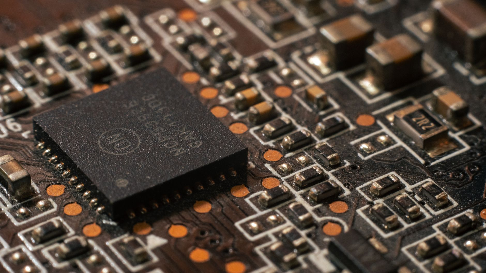

미중 AI칩 수출 통제, 韓 HBM·소재 수요 재편 가속

트럼프 행정부는 2025년 엔비디아 H20·A800 등 다운그레이드 칩을 포함한 AI 반도체의 전 세계 수출에 미국 상무부 허가를 의무화하는 'AI 칩 허가제'를 추진 중이다. 이 규정이 발효되면 엔비디아·AMD 칩을 탑재한 서버를 구매하는 한국 데이터센터 사업자도 간접적 영향권에 들어간다.
미중 정상회담(2025년 5월)에서 반도체 관련 구체적 합의는 없었으며, 엔비디아의 중국 판매 재개는 여전히 안갯속이다. 블룸버그에 따르면 엔비디아는 중국향 H20 판매 중단으로 분기 약 55억 달러의 매출 손실을 입고 있으며, 이 공백을 삼성전자·SK하이닉스 HBM3E 탑재 서버 수요 증가로 일부 상쇄하고 있다.
한국의 HBM 시장 점유율은 SK하이닉스 약 50%, 삼성전자 약 35%로 양사 합산 85%에 달한다. AI 칩 수출 규제가 강화될수록 엔비디아의 비(非)중국 데이터센터향 H100·B200 수요가 증가하고, 이를 탑재하는 HBM4 수요도 동시에 상승하는 구조다.
AI 칩 생산에 필수적인 소재 측면에서는 이트륨(YAG 레이저·형광체), 탄탈럼(커패시터), 팔라듐(촉매) 등이 공급 병목 우려 소재로 분류된다. 이트륨의 80% 이상이 중국산이며, 탄탈럼은 콩고민주공화국·르완다 의존도가 60%에 달해 공급 리스크가 상존한다.
미국의 AI 칩 허가제는 한국에 이중의 신호를 보낸다. 한편으로는 삼성·SK하이닉스가 미국 동맹 공급망의 핵심 노드임을 재확인하는 것이고, 다른 한편으로는 한국이 독자적으로 중국에 AI 인프라를 공급하는 것에 제동을 거는 압박이기도 하다. KBS 보도에서 미국 업계 관계자들이 '한국이 핵심'이라고 강조한 것도 이 맥락이다.
소재 공급망 시각에서 보면, AI 칩 수요 증가는 곧 이트륨·탄탈럼·팔라듐 등 희소 소재의 수요 증가로 직결된다. 그런데 이 소재들의 공급망은 중국·콩고·러시아에 집중되어 있어, AI 패권 경쟁이 격화될수록 소재 병목 리스크도 비례해서 커진다. AI 칩 전쟁의 실질적 취약점은 GPU가 아니라 그 GPU를 만드는 소재 공급망이다.
SK하이닉스는 HBM3E·HBM4 독점 공급자 지위를 바탕으로 엔비디아의 비중국 서버 확대 수혜를 직접 받는다. 2024년 SK하이닉스의 HBM 매출은 전년 대비 약 280% 증가했으며, AI 칩 규제가 강화될수록 비중국 데이터센터 투자가 집중되어 HBM 수요는 구조적으로 상승한다.
탄탈럼·이트륨 대체 공급국인 카자흐스탄(이트륨)·모잠비크(탄탈럼)·캐나다(탄탈럼) 광산 기업들이 수혜를 받는다. 한국 소재 기업들이 이들 국가와의 장기 공급 계약을 서두르는 과정에서 계약 프리미엄이 발생하고 있다.
삼성전자는 HBM 경쟁에서 SK하이닉스에 뒤처진 상황에서 중국 매출(전체의 약 25~30%)까지 규제 리스크에 노출되어 있다. 미국 허가제가 중국 내 삼성 팹의 장비 업그레이드에도 적용될 경우, 중국 시안·쑤저우 공장의 기술 경쟁력 유지가 어렵다.
중국 AI 스타트업(바이두·알리바바 클라우드)은 H20 공급이 막히면서 자체 AI 칩(쿤룬·한광) 개발을 가속하고 있지만, TSMC N3 이하 공정 접근이 제한되어 성능 격차는 당분간 좁혀지기 어렵다. 이 공백은 단기적으로 중국 AI 데이터센터 투자 속도를 늦출 것이다.
개인 투자자는 AI 칩 수출 규제 강화를 SK하이닉스의 비중국 HBM 수요 증가 시나리오로 읽어야 한다. 단, 삼성전자는 중국 매출 의존도와 HBM 경쟁력 회복 시점을 별도로 점검해야 하며, 두 기업은 같은 규제 환경에서 정반대의 리스크 프로파일을 가진다.
기업 전략가라면 이트륨·탄탈럼 조달 계획을 지금 재검토해야 한다. AI 칩 생산 확대에 따른 소재 수요 급증은 이미 시작됐으며, 2025~2026년 중 글로벌 탄탈럼 커패시터 수급이 빡빡해질 것이라는 신호가 도쿄·싱가포르 소재 시장에서 포착되고 있다.
실제 조달 현장에서는 — 이트륨 분말을 공급하는 중국 업체들이 2024년 하반기부터 수출 허가 서류 요건을 강화하면서 납기가 평균 4~6주에서 8~10주로 늘어났다. 이 패턴은 갈륨 규제 직전에도 똑같이 나타났다. 이트륨 재고를 2개월 이상 유지하지 않는 YAG 레이저·형광체 업체들은 지금 당장 비축 수준을 높여야 한다.
이 포스팅은 쿠팡 파트너스 활동의 일환으로 수수료를 제공받습니다.